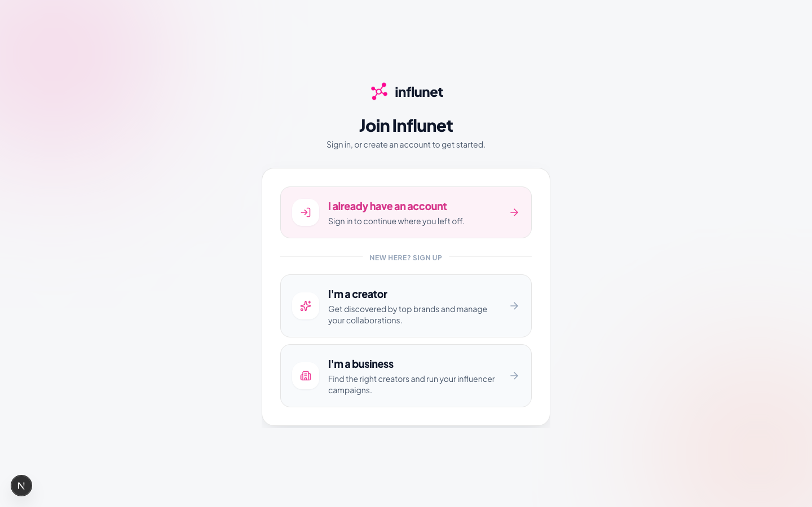
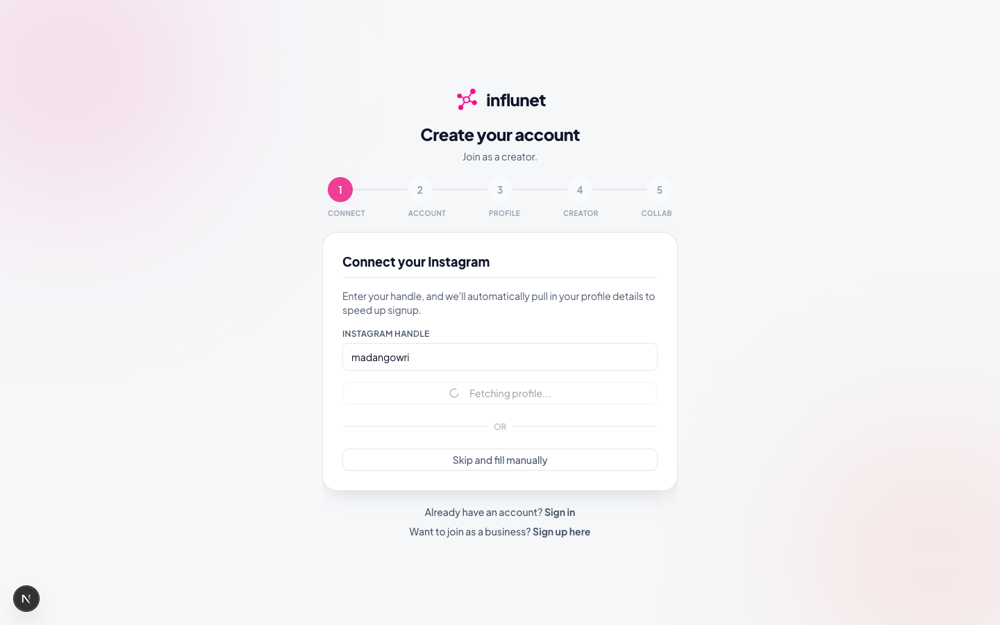
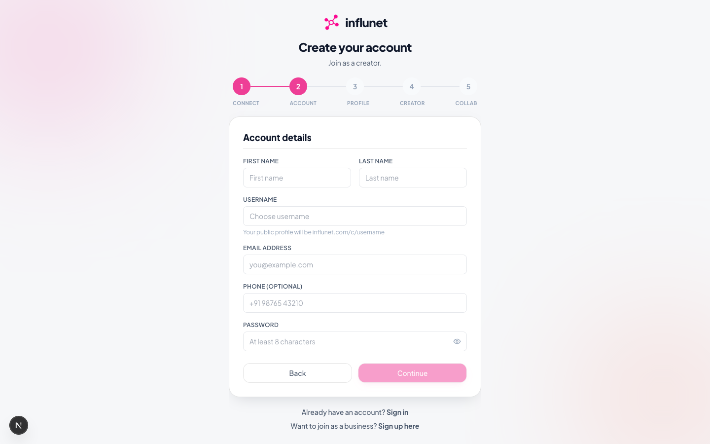
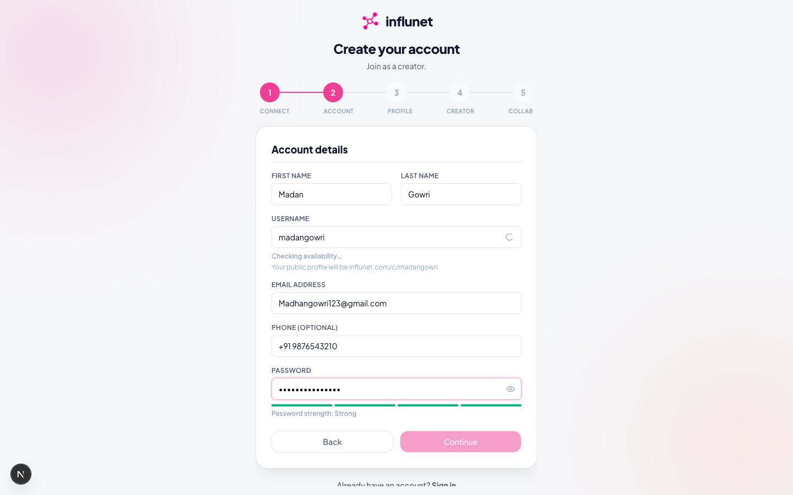
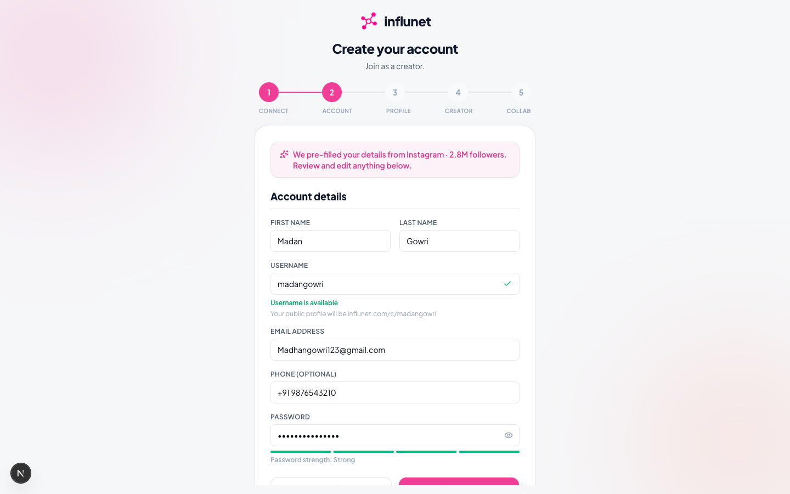
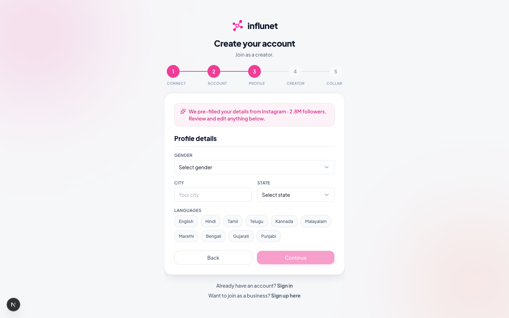
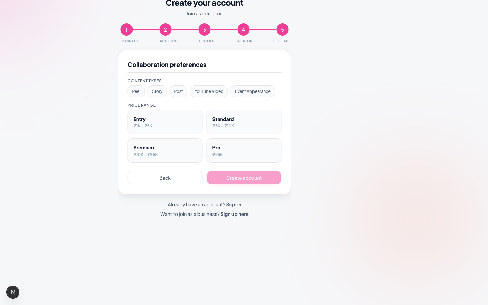
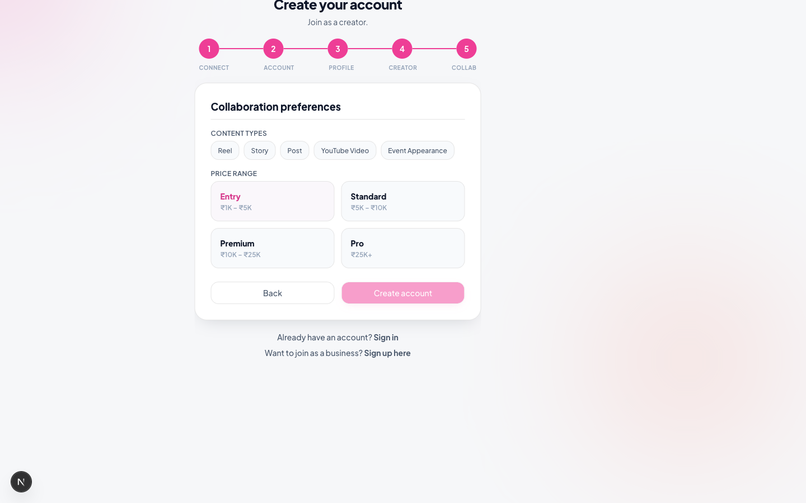

Influnet — E2E Walkthrough
Full application flow tested on real Instagram (madangowri) and YouTube data via Playwright. 18 screenshots across 10 phases.

Landing page — hero with brand logo, WebGL globe, value proposition, and CTA buttons. Clean dark theme with gradient glows.

Role picker — two cards: "I'm a creator" with sparkle icon, "I'm a business" with building icon. Also has "I already have an account" sign-in link.
Step 1 of 5: "Connect" — Instagram handle input with "Auto-fill my details" button. 5-step stepper shows current step highlighted in brand color.
UX: Clear single-purpose step. The "Or" divider with "Skip and fill manually" gives users an escape hatch if scraping isn't needed.
Instagram handle "madangowri" entered. "Auto-fill my details" button is now active.

The Instagram scrape (Apify/HikerAPI) didn't return data — instead of blocking the user, "Skip and fill manually" lets the user proceed. The wizard correctly handles scraping failures gracefully.
UX: No error toast shown for the failed scrape (it just silently returns). The "Skip and fill manually" button was already there regardless of success. This is smooth — no scary error messages.

Step 2: First name, Last name, Username with availability check (green checkmark when available), Email, Phone (optional), Password with strength meter bars.
UX: Clean form layout. The username availability check gives real-time feedback. Password strength meter helps users choose a secure password. The "Your public profile will be" hint helps users understand the URL format.

All fields filled: First name "Madan", Last name "Gowri", Username "madangowri" with green checkmark, email, phone. Password strength shows "Strong" with all 4 bars filled.

Step 3: Gender dropdown, City + State (2-column), Languages as multi-select chips (Tamil, English, Hindi, Telugu, etc.).
UX: Multi-select chips are much better than multi-select dropdowns — visually shows all options, single tap to toggle. The 2-column layout for City/State is space-efficient.

Gender: Male, City: Chennai, State: Tamil Nadu, Languages: Tamil + English selected (highlighted chips).

Step 4: Primary niche dropdown, Secondary niches as scrollable chips, Bio textarea, Instagram handle (pre-filled), YouTube (@channel), Twitter handles.
UX: The Instagram handle is carried forward from Step 1, which is good. The secondary niches scroll inside a bordered container — shows ~6 at a time. Bio textarea is generously sized.

Niche: Entertainment (primary), Comedy + Lifestyle (secondary). Bio entered. YouTube: @MadanGowri.
Note: Collab type chips and price range on Step 5 weren't clicked by the script (selector issue). This means the "Create account" button remained disabled, preventing full submission.

Step 5: Content types (Reel, Story, Post, YouTube Video, Event Appearance) as chips. Price range as 2x2 card grid with labels and ranges.
UX: Price range cards show both label (Entry/Standard/Premium/Pro) and range (₹1K–₹5K etc.) — helps creators self-select without guessing numbers.

No collab types or price selected (script error on chips). "Create account" button disabled as expected.
Issue: The content type chips ("Reel", "Story", "Post", "YouTube Video", "Event Appearance") weren't found by the script. This is a Playwright selector issue — the chip text might be rendered differently in the DOM.

Creator home: Profile card with name, public link copy button, verification badge. Collaboration counters (all zeroes). Instagram connect prompt. Analytics section.
UX: The "Copy link" button is prominent. The verification guide (if visible) appears below the profile card. The zero-state for collaborations is clear and actionable. However, the Instagram connect card appears even when scraping is already configured — might confuse creators who already linked.
Public profile showing avatar, name, social stats (followers, engagement rate if scraped), verification badge. "Work with me" CTA button.
UX: Server-rendered for SEO. CTA intelligently changes based on viewer state (anonymous → signup, logged-in business → request/project). The stats grid collapses well on mobile.
Audience breakdown: Top locations, Age ranges, Gender split with progress bars. Portfolio and past collaborations shown below.
UX: Progress bars give quick visual comparison. The self-reported vs platform-sourced distinction is marked clearly. Portfolio entries are auto-populated from completed projects.

Settings: Profile edit fields (name, bio, headline, location). Social links section with Instagram and YouTube handles.
UX: Clean form layout with familiar field patterns. "Refresh data" buttons for social accounts let users manually trigger re-scraping. The username slug is shown with preview of the public URL.
Anonymous visitor sees the same public profile with "Work with me" CTA linking to /signup with next param that preserves the creator redirect.
UX: The CTA adapts: anonymous → signup, returning business → go to project, existing business with pending request → "Request sent". This prevents duplicate requests.
⚠️ Screenshots Not Yet Captured
The Playwright script hit form selector issues on Steps 3–4 (label→input matching) and stopped. These phases are ready to capture on the next run:
- Business signup wizard (Steps 1–4: Account, Company, Verify, Intent)
- Business dashboard after approval + relogin
- Send collab request form (filled + sent confirmation)
- Creator requests inbox (incoming request with "Awaiting reply" badge)
- Creator accepts request → project created confirmation
- Projects list with "Your move" bucket
- Project detail with stage timeline + Kanban board
- Stage advancement (advance button, celebration animation)
- Cancellation modal (reason dropdown, note field)
- Business project view (the other side's perspective)